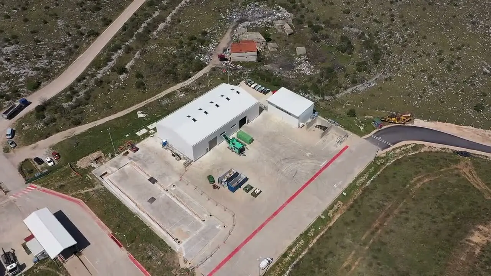
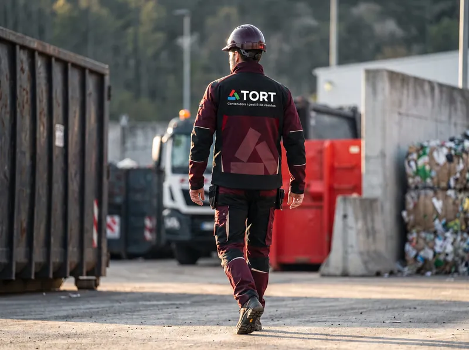
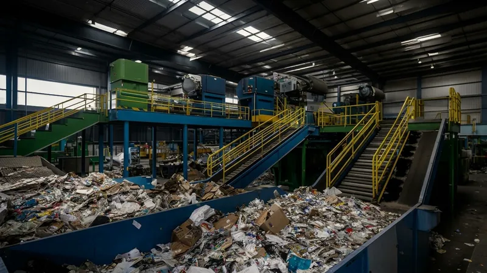
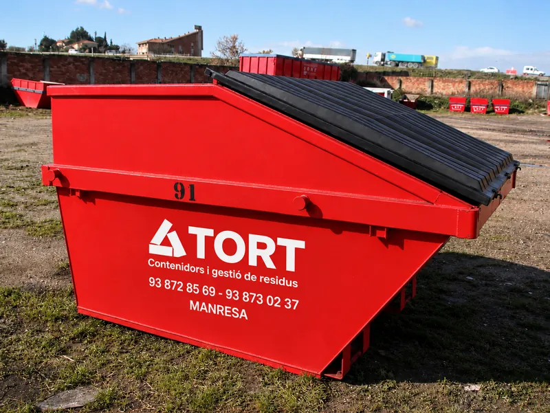
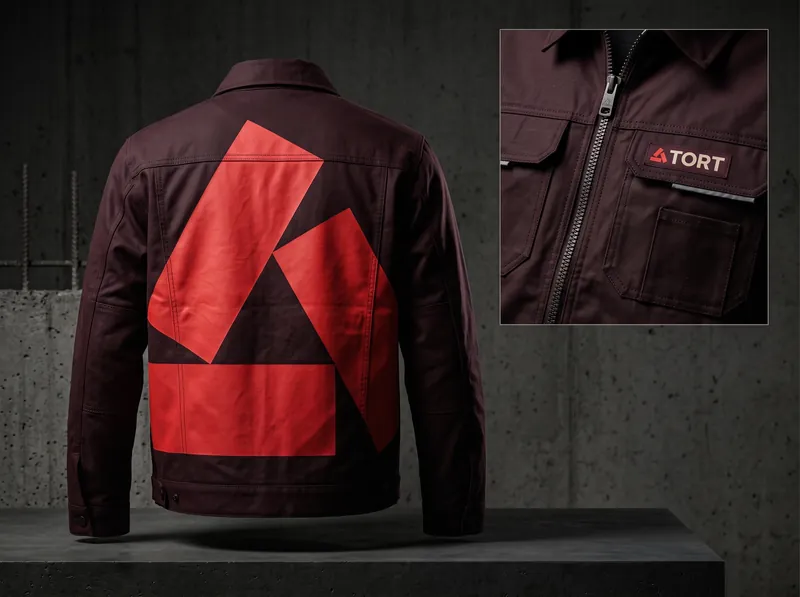
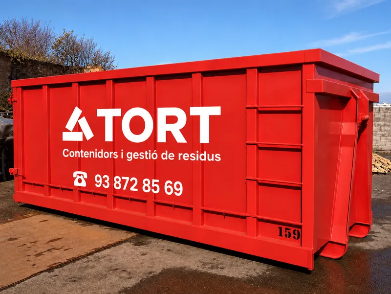
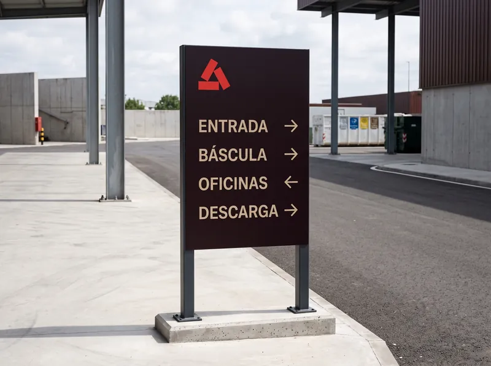
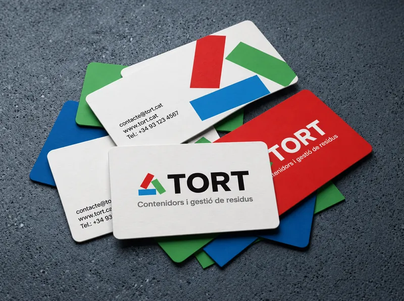

CRT
Centre de recollida i transferència de RAEE
Autoritzat per a la recollida i transferència d'equips elèctrics i electrònics grans i petits.
Ens encarreguem de la classificació, el tractament i la destinació final de cada residu.
Serveis
No trobes el teu servei? Ens ho dius i t'ho gestionem.
Demana pressupostSectors
Contenidors
Empresa
Som una empresa familiar de Manresa. Fa més de 50 anys que recollim, transportem i gestionem residus d'empreses i indústries del Bages.
Ara estrenem planta nova: més espai, més capacitat i la mateixa manera de treballar de sempre.

Autoritzacions


CRT
Autoritzat per a la recollida i transferència d'equips elèctrics i electrònics grans i petits.
Gremi
Empresa agremiada. Veure el gremi ↗
Verifica les autoritzacions al Sistema Documental de Residus de l'ARC ↗
Què gestionem
Som centre de recollida i transferència de RAEE i tenim totes les homologacions per tractar el que et sobra, tant si es pot reciclar com si s'ha d'eliminar. Si el teu residu no apareix a la llista, pregunta'ns-ho.
Galeria







Ubicació
Nova ubicació a Manresa, a peu de carretera i amb accés directe per a camions. Si vens, avisa'ns i t'expliquem com arribar-hi.
Et passem un pressupost sense compromís i amb la documentació que caldrà per a cada residu.